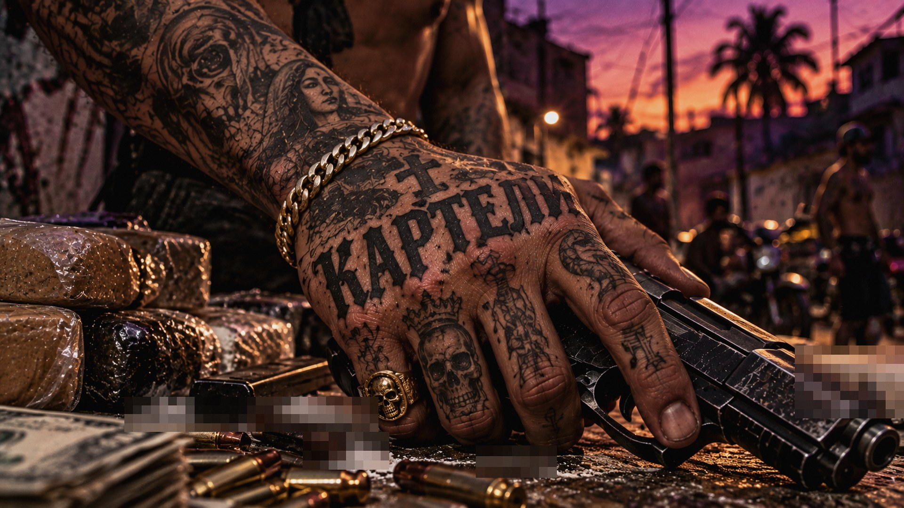
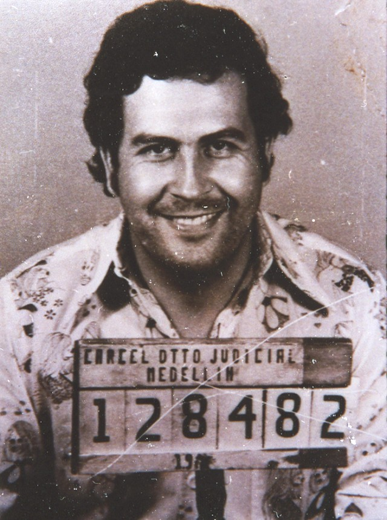
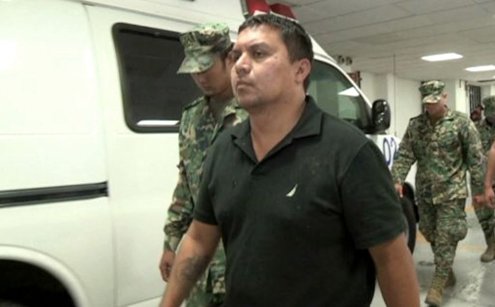
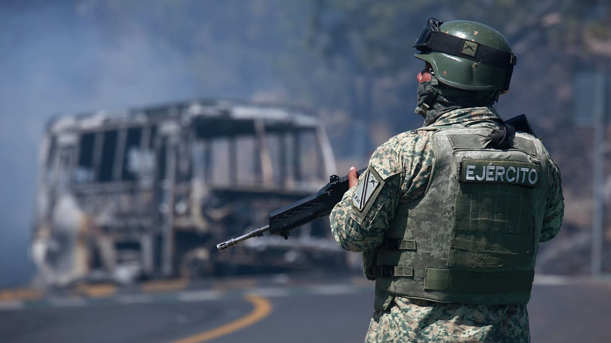

Expediente · МГИМО, ФУП
Медельин × Лос-Сетас
СХОДСТВА, РАЗЛИЧИЯ, ПОЛИТИЧЕСКОЕ ВЛИЯНИЕ · ТУЧНИН ДМИТРИЙ · РЫБАКОВ ЕГОР · 2026
ВОПРОС / МЕДЕЛЬИН / МЕТОДЫ МЕДЕЛЬИНА / СЕТАС / МЕТОДЫ СЕТАС / СРАВНЕНИЕ / 2025–2026 / ВЫВОДЫ
ВОПРОС ИССЛЕДОВАНИЯ
Как картель превращает насилие в политическое влияние — и почему Медельин и Сетас делали это по-разному?
ЧАСТЬ 1 · МЕДЕЛЬИНСКИЙ КАРТЕЛЬ
ЧАСТЬ 2 · ЛОС-СЕТАС
Рамка: Лессинг — «насильственное лоббирование» и «насильственная коррупция» · Дуран-Мартинес · Тилли
01
Expediente 01
ЧАСТЬ ПЕРВАЯ · ТУЧНИН ДМИТРИЙ
МЕДЕЛЬИНСКИЙ
КАРТЕЛЬ
Власть через легитимность и террор против центра
ВОПРОС / МЕДЕЛЬИН / МЕТОДЫ МЕДЕЛЬИНА / СЕТАС / МЕТОДЫ СЕТАС / СРАВНЕНИЕ / 2025–2026 / ВЫВОДЫ
Медельин: экспортная корпорация
Лидеры
Пабло Эскобар, братья Очоа, Карлос Ледер, Гонсало Родригес Гача
Бизнес
Кокаин из Анд — в США: паста, лаборатории, авиаперевозки, сбыт
Модель
Союз наркопредпринимателей с наёмными киллерами — не армия
Финал
Ледер выдан США в 1987-м, Эскобар убит 2 декабря 1993 года

МЕДЕЛЬИН, 1976 · главная угроза — экстрадиция в США
ВОПРОС / МЕДЕЛЬИН / МЕТОДЫ МЕДЕЛЬИНА / СЕТАС / МЕТОДЫ СЕТАС / СРАВНЕНИЕ / 2025–2026 / ВЫВОДЫ
19 июня 1991 · Колумбия
1991
Террор сработал: Конституция запретила экстрадицию
В тот же день Эскобар сел в «Ла Катедраль» — тюрьму на своих условиях. В 1992-м он бежал, а в 1997-м выдачу вернули
Лессинг: «насильственное лоббирование» — террор против центра, чтобы изменить закон
Конституция Колумбии 1991, ст. 35 · El Espectador, «Las obsesiones de la extradición» (2019)
ВОПРОС / МЕДЕЛЬИН / МЕТОДЫ МЕДЕЛЬИНА / СЕТАС / МЕТОДЫ СЕТАС / СРАВНЕНИЕ / 2025–2026 / ВЫВОДЫ
Медельин сегодня: та же дилемма
2023–26
Мир с бандами
Правительство Петро ведёт переговоры «городского мира» с главарями банд Медельина в тюрьме Итагуи
АПР 2026
Скандал
Концерт звезды прямо в тюрьме «Ла Пас»: привилегии главарей проверяют прокуратура и надзор
7 АВГ 2026
Перелом
Новый президент Абелардо де ла Эсприелья в первый же день развозит главарей по тюрьмам строгого режима
АВГ 2026
Выдача
Первые указы о выдаче, в том числе в США; Колумбия входит в антикартельную коалицию Трампа
1991: тюрьма на условиях Эскобара. 2026: тюрьма на условиях банд — и снова ставка на выдачу
Infobae, Cambio, Vanguardia (авг. 2026); AP — итоги выборов 21 июня 2026; The Star — «Щит Америк», сент. 2026
02
Expediente 02
ЧАСТЬ ВТОРАЯ · РЫБАКОВ ЕГОР
ЛОС-СЕТАС
Власть через территорию, подкуп и страх
ВОПРОС / МЕДЕЛЬИН / МЕТОДЫ МЕДЕЛЬИНА / СЕТАС / МЕТОДЫ СЕТАС / СРАВНЕНИЕ / 2025–2026 / ВЫВОДЫ
Сетас: армия, ставшая картелем
Истоки
Дезертиры армейского спецназа GAFE, конец 1990-х
Хозяин
Боевое крыло Картеля Залива; в 2010-м — разрыв и война
Бизнес
Наркотики плюс вымогательство, похищения, торговля мигрантами
Финал
Ласкано убит в 2012-м, Тревиньо (Z-40) арестован в 2013-м — распад

АРЕСТ Z-40, ИЮЛЬ 2013
Главный ресурс — не товар, а контроль территории
ВОПРОС / МЕДЕЛЬИН / МЕТОДЫ МЕДЕЛЬИНА / СЕТАС / МЕТОДЫ СЕТАС / СРАВНЕНИЕ / 2025–2026 / ВЫВОДЫ
Альенде и Пьедрас-Неграс · 2011
300+
Полиция не мешала, а помогала
Месть за сотрудничество с США: убитые и пропавшие, включая родственников. По показаниям, людей задерживала местная полиция, жалобы семей не принимали
Лессинг: «насильственная коррупция» — сила как аргумент в торге о взятке
Число — по показаниям свидетелей в судах США; оценки расходятся · UT Austin, Human Rights Clinic (2017)
ВОПРОС / МЕДЕЛЬИН / МЕТОДЫ МЕДЕЛЬИНА / СЕТАС / МЕТОДЫ СЕТАС / СРАВНЕНИЕ / 2025–2026 / ВЫВОДЫ
Сетас сегодня: Картель Северо-Востока
ФЕВ 2025
Выдача
Мексика передала США 29 заключённых, среди них братьев Тревиньо (Z-40 и Z-42)
ФЕВ 2025
«Террористы»
Картель Северо-Востока — главный наследник Сетас — внесён в США в список террористических организаций
ОКТ 2026
Деньги
Санкции Минфина США: 4 человека и 11 компаний — скачки, стройка, грузоперевозки, нефть и газ
13+
Мэры
Не меньше 13 мэров убиты в Мексике с октября 2024 года — борьба за власть на местах идёт
Модель та же: ипподром в Нуэво-Ларедо и лошади из США — как в деле Тревиньо 2013 года
Госдеп и Минфин США (13 окт. 2026); Infobae; AP / Euronews (февр. 2025); Semafor, UnoTV (2026)
ВОПРОС / МЕДЕЛЬИН / МЕТОДЫ МЕДЕЛЬИНА / СЕТАС / МЕТОДЫ СЕТАС / СРАВНЕНИЕ / 2025–2026 / ВЫВОДЫ
Различия: столица против штата
| ПАРАМЕТР | МЕДЕЛЬИН | ЛОС-СЕТАС |
|---|
| Происхождение | Наркопредприниматели | Дезертиры спецназа |
| Доход | Экспорт кокаина в США | Рента с территории |
| Цель в политике | Изменить закон об экстрадиции | Купить тех, кто применяет закон |
| Уровень | Национальный: Конгресс, Конституция | Местный: полиция, мэры, штаты |
| Общество | Популизм, поиск признания | Страх, почти без легитимности |
| Итог | Победа в 1991-м, разгром к 1993-му | Распад на фракции после 2013-го |
ВОПРОС / МЕДЕЛЬИН / МЕТОДЫ МЕДЕЛЬИНА / СЕТАС / МЕТОДЫ СЕТАС / СРАВНЕНИЕ / 2025–2026 / ВЫВОДЫ
Общее: plata o plomo
PLATA
Подкуп + угроза
Взятка и пуля — одна стратегия: отказ от денег карается насилием
USA
Третий игрок
Экстрадиция, суды, санкции — а с 2025-го и военная сила против картелей
HIDRA
Ликвидация — не победа
Убийство лидеров не убивает рынок: место Медельина заняли другие, Сетас распались на фракции
Разница — в адресате: Медельин давил на столицу, Сетас покупали штаты и города
Госдепартамент США, признание картелей иностранными террористическими организациями, февраль 2025

ВОПРОС / МЕДЕЛЬИН / МЕТОДЫ МЕДЕЛЬИНА / СЕТАС / МЕТОДЫ СЕТАС / СРАВНЕНИЕ / 2025–2026 / ВЫВОДЫ
2025–2026: США воюют с картелями
ФЕВ 2025
8 группировок, в том числе Картель Северо-Востока и Картель Залива, признаны в США террористическими
СЕН 2025
Начало ударов по лодкам у Венесуэлы и Колумбии: к 4 октября 2026 — 79 ударов, 238 погибших
ЯНВ 2026
Операция США в Венесуэле и захват Мадуро; Трамп грозит ударами «по земле» в Мексике
ФЕВ 2026
Спецназ Мексики при разведке США убивает «Эль Менчо», главу CJNG — волна блокад дорог
СЕН 2026
Коалиция «Щит Америк»: Колумбия вошла, Мексика — нет, Шейнбаум отвергает военное вмешательство
Фото: блокады после гибели «Эль Менчо», февраль 2026 · InSight Crime; Госдеп США; The Star, Telemundo, CTV; La Razón, RCN
ВОПРОС / МЕДЕЛЬИН / МЕТОДЫ МЕДЕЛЬИНА / СЕТАС / МЕТОДЫ СЕТАС / СРАВНЕНИЕ / 2025–2026 / ВЫВОДЫ
Выводы
1
Медельин боролся с законом, Сетас покупали исполнителей закона
2
Форму влияния задаёт то, где решается главный для картеля вопрос: в столице или на месте
?
Открытый вопрос 2026 года: победит ли картели сила извне, если не победить коррупцию на местах?
¡GRACIAS! Спасибо за внимание
Источники: Tilly (1985); Lessing (2017); Durán-Martínez (2018); El Espectador; InSight Crime; UT Austin HRC (2017); Госдеп США (2025)